Almond Orchard Water Use#
What we will do here#
In this section we will propose a methodology to estimate Reference Evapotranspiration (ETref), Maximum crop or potential evapotranspiration (ETc) and actual evapotranspiration (ETa). There are ET products available, but they need to be tweeked to Almond cultivation or do not have the right temporal or spatial resolution. To compute actual evapotranspiration it could be worthwhile to consult thermal/ energy balance products in the future (Example). For now we follow on an optical based algortihm to get at least ETref, ETc, and potentially ETa for case study fields. We do this to get an idea of the necessary building blocks. Here a short definition of these terms:
ETref (Reference Evapotranspiration): This is the evapotranspiration rate from a well-watered, uniform reference surface (typically grass or alfalfa). It reflects the climate demand (influenced by temperature, wind, humidity, radiation) and is used as a baseline for estimating crop water needs. The reference surface is a hypothetical grass reference crop with an assumed crop height of 0.12 m, a fixed surface resistance of 70 s/m and an albedo of 0.23. The reference surface closely resembles an extensive surface of green, well-watered grass of uniform height, actively growing and completely shading the ground. The fixed surface resistance of 70 s/m implies a moderately dry soil surface resulting from about a weekly irrigation frequency. Click for full formula and explanation
ETc (Crop Evapotranspiration): This is the potential water use of a specific crop under ideal (well-watered) conditions. It is calculated by multiplying ETref by crop-specific coefficients that account for canopy size, growth stage, and irrigation design.
Actual ET: This is the real water loss from a crop under actual conditions, which may be lower than ETc due to water stress, disease, or poor irrigation.
{kind=link}
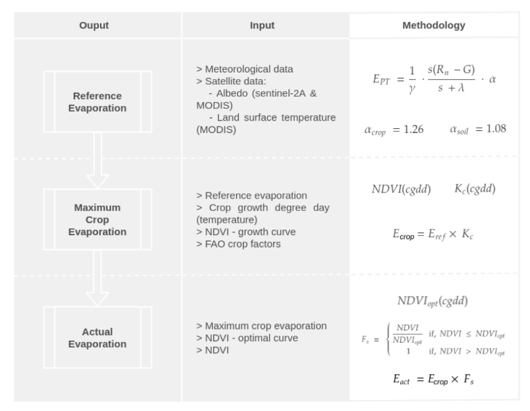
Fig. 4 The methodology we use here is a simplified version of the one proposed by den Besten et al, 2020#
Snippets of TECHNICAL REPORT - Portugal Nuts#
The report determines the water requirements of tree nut crops in the main production areas of Portugal
The intensification of almond production in Portugal is a recent phenomenon, as the acreage of new intensive plantations has gone from less than 2.000 ha in 2014 to more than 26.000 ha in 2020. Irrigation is indispensable to achieve high productivity in Portugal. (maybe give a calculation)
Methodology used: After determining ETc, the net irrigation requirements are computed based on the effective rainfall and the water budget of the crop root zone. Such irrigation requirements are calculated for the different areas and for a period of 11 years over the last two decades to capture the temporal variability. They represent the net irrigation demand needed to achieve maximum production in an average year.
Maximum Kc values are typically reached on July-August, ranging from 0.95 to 1.10. However, more recent data from California suggests that almond Kc maximum values of mature orchards irrigated with microsprinklers may reach values as high as 1.2 (Goldhamer & Girona, 2012). High Kc values, close to 1.2, have been also reported in Australia (Stevens et al., 2011). Higher Kc values are likely due to the increase in planting densities in recent plantations, larger tree canopies due to less annual pruning, and higher fruit loads. Additionally, more frequent soil wetting due to high-frequency irrigation can also increase direct soil surface evaporation which may also contribute to high Kc values. With this background, the almond crop coefficients used here are based on direct ETc field measurements conducted during 10 years in Córdoba, Spain, using a weighing lysimeter installed in 2009 (the only weighing lysimeter of almond in the world until recently), as reported in three consecutive doctoral theses (i.e., Espadafor, 2015; López-López, 2018 and Moldero, 2021).
{kind=link}
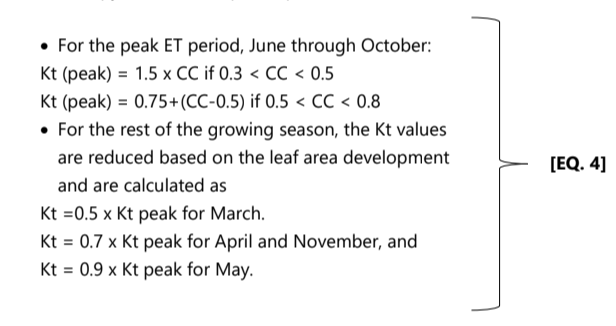
Fig. 5 Crop factors used#
the optimal deficit irrigation program for almond should prioritize supplying the full ETc in the following periods:
Fruit set and early canopy growth (normally achieved if the winter had normal rainfall and the soil is fully charged at flowering)
Post-harvest period when the floral buds of the following season are formed. Normally, a month duration after harvest is considered minimum, then some water deficits may be applied later, as the end of the season approaches.
Severe water deficits should be always avoided; ETa should not be below 50% of ETc throughout the season.
{kind=link}
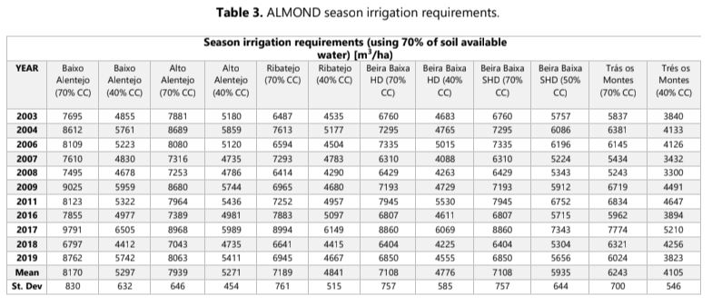
Fig. 6 70 percent canopy over orchard (CC=70%) (López-López et al., 2018)#
Reference evapotranspiration#
Daily Reference ET (df_ETref) – daily, 30 km (I think it is Penmann Monteith) data from: https://data.apps.fao.org/wapor/?lang=en for Rota Única Farm to start with
import matplotlib.pyplot as plt
import seaborn as sns
import pandas as pd
import numpy as np
import os
# Load ETref
df_ETref = pd.read_csv(
os.path.join('Data/Evaporation', 'Ref_ET.csv'),
index_col=0,
header=0,
names=['ETref'],
delimiter=';',
decimal=','
)
df_ETref.index = pd.to_datetime(df_ETref.index)
df_ETref = df_ETref[~df_ETref.index.duplicated(keep='first')]
# Load Precipitation
df_prec = pd.read_csv(
os.path.join('Data/Evaporation', 'CHIRPS_Daily_Precipitation.csv'),
index_col=1,
header=0
)
df_prec.index = pd.to_datetime(df_prec.index)
df_prec = df_prec.rename(columns={'precip_mm': 'Precip'}) # Optional: rename for clarity
df_prec = df_prec[~df_prec.index.duplicated(keep='first')]
df_prec = df_prec[['Precip']]
# Load NDVI
df_ndvi = pd.read_csv(
os.path.join('Data/extended', 'NDVI_TimeSeries_PerFeature_ext_vc2.csv'),
index_col=7,
header=0
)
df_ndvi.index = pd.to_datetime(df_ndvi.index)
df_ndvi = df_ndvi.rename(columns={'NDVI_mean': 'NDVI'}) if 'NDVI_mean' in df_ndvi.columns else df_ndvi
df_ndvi = df_ndvi[['NDVI']] if 'NDVI' in df_ndvi.columns else df_ndvi.iloc[:, [0]]
df_ndvi = df_ndvi[~df_ndvi.index.duplicated(keep='first')]
df_ndvi = df_ndvi[['NDVI']]
# Merge all on the date index
df_merged = pd.concat([df_ETref, df_prec, df_ndvi], axis=1)
# Sort index (optional but tidy)
df_merged = df_merged.sort_index()
# interpolate NDVI
df_merged['NDVI'][df_merged['NDVI'] < 0.1] = np.nan
df_merged['NDVI'] = df_merged['NDVI'].interpolate()
# select focus
df_merged = df_merged['2018-01-01':'2025-01-01']
df_merged
# Final preview
print(df_merged.head())
print(df_merged.info())
---------------------------------------------------------------------------
ModuleNotFoundError Traceback (most recent call last)
Cell In[1], line 1
----> 1 import matplotlib.pyplot as plt
2 import seaborn as sns
3 import pandas as pd
ModuleNotFoundError: No module named 'matplotlib'
# === Plot NDVI time series with min/max around median ===
sns.set_theme()
fig, ax = plt.subplots(figsize=(10, 4))
df_merged['ETref'].plot(color='darkcyan', ax=ax)
# Loop through each year and color the background for March to September
for year in range(df_merged['ETref'].index.year.min(), df_merged['ETref'].index.year.max() + 1):
start_date = pd.Timestamp(f'{year}-03-01') # March 1st of the year
end_date = pd.Timestamp(f'{year}-09-15') # September 30th of the year
ax.axvspan(start_date, end_date, color='mediumseagreen', alpha=0.3)
# Labels and legend
plt.title('Daily reference evaporation (ET ref)')
plt.xlabel('Date')
plt.ylabel('ET ref [mm/day]')
plt.legend()
plt.grid(True)
plt.xticks(rotation=45)
plt.tight_layout()
# === Show plot ===
plt.show()
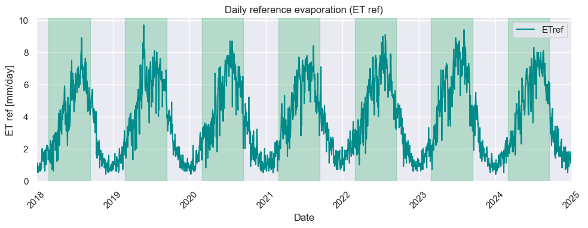
Precipitation and NDVI data#
We got precipitation data from CHIRPS and NDVI data from S2 (this will can used for the Crop Factors at a next stage)
# === Plot NDVI time series with min/max around median ===
sns.set_theme()
fig, ax1 = plt.subplots(figsize=(12, 6))
# Loop through each year and color the background for March to September
for year in range(df_merged.index.year.min(), df_merged.index.year.max() + 1):
start_date = pd.Timestamp(f'{year}-03-01') # March 1st of the year
end_date = pd.Timestamp(f'{year}-09-15') # September 30th of the year
ax.axvspan(start_date, end_date, color='mediumseagreen', alpha=0.3)
# Line plots for
ax1.plot(df_merged.index, df_merged['NDVI']*10, color='tab:red', label='NDVI x10')
ax1.plot(df_merged.index, df_merged['ETref'], color='tab:green', label='ETref')
ax1.set_ylabel('Dekadal evaporation [mm/day]')
# ax1.legend(loc='upper left')
# Secondary y-axis for Precipitation (plotted as a bar plot, top-down)
ax2 = ax1.twinx()
ax2.bar(df_merged.index, -df_merged['Precip'], color='skyblue', edgecolor='skyblue', linewidth=1.5, label='precipitation')
ax2.set_ylabel('Precipitation (inverted)')
# ax2.legend(loc='upper right')
# Optional: make sure the precipitation legend appears
lines, labels = ax1.get_legend_handles_labels()
lines2, labels2 = ax2.get_legend_handles_labels()
ax2.legend(lines + lines2, labels + labels2, loc='upper right')
plt.title('Timeseries with Precipitation as Inverted Bar Plot')
plt.tight_layout()
plt.show()
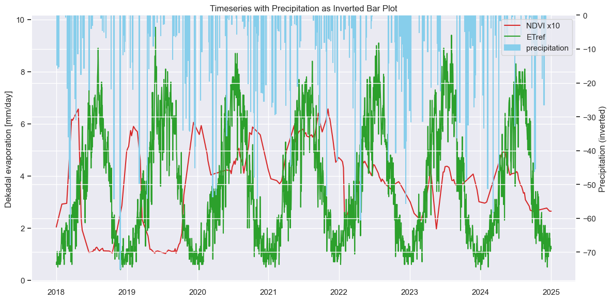
Static Crop Factors#
An example with static crop factors…
# Define Kc values by month
kc_by_month = {
1: 0.30, 2: 0.30, 3: 0.40,
4: 0.60, 5: 0.80, 6: 0.90,
7: 0.90, 8: 0.85, 9: 0.70,
10: 0.50, 11: 0.30, 12: 0.30
}
# Add Kc values by mapping the month from the 'date' column
df_merged['Kc'] = df_merged.index.month.map(kc_by_month)
df_merged['ETc'] = df_merged['ETref'] * df_merged['Kc']
print(df_merged.head())
ETref Precip NDVI Kc ETc
2018-01-01 0.6 0.00000 0.203622 0.3 0.18
2018-01-02 0.6 0.00000 0.206655 0.3 0.18
2018-01-03 0.7 0.00000 0.209688 0.3 0.21
2018-01-04 0.6 14.90844 0.212722 0.3 0.18
2018-01-05 0.6 0.00000 0.215755 0.3 0.18
fig, ax1 = plt.subplots(figsize=(12, 6))
# Gridlines go to the back
ax1.grid(True, zorder=0)
ax1.set_axisbelow(True)
# Secondary y-axis for Precipitation (top-down bar plot)
ax2 = ax1.twinx()
# Gridlines go to the back
ax2.grid(True, zorder=0)
ax2.set_axisbelow(True)
ax2.bar(df_merged.index, df_merged['Precip'], color='skyblue', edgecolor='skyblue', linewidth=1.5, label='Precipitation', zorder=1)
# Invert y-axis so bars go top-down, but show positive tick labels
ax2.invert_yaxis()
ax2.set_ylabel('Precipitation [mm]')
ax2.set_yticklabels([abs(int(label)) for label in ax2.get_yticks()])
# Line plots for ETref, ETc, Kc
ax1.plot(df_merged.index, df_merged['ETref'], color='tab:red', label='ETref', zorder=2)
ax1.plot(df_merged.index, df_merged['ETc'], color='tab:green', label='ETc', zorder=2)
ax1.plot(df_merged.index, df_merged['Kc']*10, color='k', label='Kc x10', zorder=2)
ax1.set_ylabel('Evapotranspiration [mm/day]')
# Legends
lines1, labels1 = ax1.get_legend_handles_labels()
lines2, labels2 = ax2.get_legend_handles_labels()
ax2.legend(lines1 + lines2, labels1 + labels2, loc='upper right')
plt.title('Timeseries with Precipitation as Inverted Bar Plot')
plt.tight_layout()
plt.show()
C:\Users\ici-1\AppData\Local\Temp\ipykernel_4292\2378865283.py:18: UserWarning: set_ticklabels() should only be used with a fixed number of ticks, i.e. after set_ticks() or using a FixedLocator.
ax2.set_yticklabels([abs(int(label)) for label in ax2.get_yticks()])
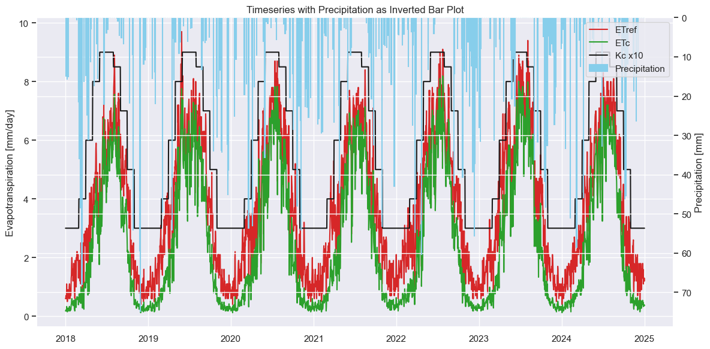
Flexible Crop Factors#
Here we use the study of Portugal Nuts to get to flexible crop factors that can be used to calculate the potential Orchard Water Use.
import math
def calculate_etc(eto, cc, fw, month, F):
"""
Calculate crop evapotranspiration (ETc) for almond orchards.
Parameters:
- eto: Reference evapotranspiration (ETo)
- cc: Canopy cover (0-1 scale, e.g., 0.7 for 70%)
- fw: Fraction of wet soil surface (typically 0.15)
- month: Integer month (1=January, ..., 12=December)
- F: Monthly fraction of rainy days (0-1)
Returns:
- etc: Crop evapotranspiration (ETc)
- Kt: Transpiration coefficient
- Kg: Wetted soil evaporation coefficient
- Ks: Dry soil evaporation coefficient
"""
# Check if within irrigation period (April to October)
is_irrigation_period = 4 <= month <= 9
# Kg component: evaporation from wetted soil surface
if is_irrigation_period:
intercepted_radiation_factor = 1.2
Kg = 1.4 * 0.15 * math.exp(-1.6 * cc * intercepted_radiation_factor) * fw
else:
Kg = 0
# Ks component: evaporation from dry soil surface
if is_irrigation_period and eto > 0:
Ks = (0.28 - (0.18 * cc) - (0.03 * eto) + (3.8 * F * (1 - F) / eto)) * (1 - fw)
else:
Ks = 0
# Kt component: tree transpiration
if month in [12, 1, 2]: # Dormant period
Kt = 0
else:
# Compute Kt peak based on canopy cover
if 0.3 < cc < 0.5:
Kt_peak = 1.5 * cc
elif 0.5 <= cc < 0.8:
Kt_peak = 0.75 + (cc - 0.5)
else:
Kt_peak = 0
if month == 3:
Kt = 0.5 * Kt_peak
elif month in [4, 11]:
Kt = 0.7 * Kt_peak
elif month == 5:
Kt = 0.9 * Kt_peak
elif 6 <= month <= 10:
Kt = Kt_peak
else:
Kt = 0
# Final ETc calculation
etc = eto * (Kt + Kg + Ks)
return etc, Kt, Kg, Ks
# get rainy day fraction (F)
df_merged['Year'] = df_merged.index.year
df_merged['Month'] = df_merged.index.month
# Define rainy day threshold (e.g., 1 mm)
rain_threshold = 1.0
# Create a binary indicator for rainy days
df_merged['IsRainyDay'] = df_merged['Precip'] >= rain_threshold
# Group by year and month and calculate rainy day fraction
monthly_rainy_fraction = (
df_merged.groupby(['Year', 'Month'])['IsRainyDay']
.agg(['sum', 'count'])
.rename(columns={'sum': 'RainyDays', 'count': 'TotalDays'})
)
monthly_rainy_fraction['RainyDaysFraction'] = monthly_rainy_fraction['RainyDays'] / monthly_rainy_fraction['TotalDays']
original_index = df_merged.index # Save current index
# Merge back into original dataframe
df_merged = df_merged.merge(
monthly_rainy_fraction['RainyDaysFraction'],
on=['Year', 'Month'],
how='left'
)
df_merged.index = original_index # Restore original index
print(df_merged.head())
ETref Precip NDVI Kc ETc Year Month IsRainyDay \
2018-01-01 0.6 0.00000 0.203622 0.3 0.18 2018 1 False
2018-01-02 0.6 0.00000 0.206655 0.3 0.18 2018 1 False
2018-01-03 0.7 0.00000 0.209688 0.3 0.21 2018 1 False
2018-01-04 0.6 14.90844 0.212722 0.3 0.18 2018 1 True
2018-01-05 0.6 0.00000 0.215755 0.3 0.18 2018 1 False
RainyDaysFraction
2018-01-01 0.16129
2018-01-02 0.16129
2018-01-03 0.16129
2018-01-04 0.16129
2018-01-05 0.16129
# Example DataFrame
# Columns: ETo, Month, F (fraction of rainy days)
# Constants
cc = 0.7 # this may be turned flexible (maximum canopy cover)
fw = 0.15 # depends on irrigation type
# Apply row-wise
df_merged[['ETc_2', 'Kt', 'Kg', 'Ks']] = df_merged.apply(
lambda row: pd.Series(calculate_etc(row['ETref'], cc, fw, row['Month'], row['RainyDaysFraction'])),
axis=1
)
df_merged.head()
| ETref | Precip | NDVI | Kc | ETc | Year | Month | IsRainyDay | RainyDaysFraction | ETc_2 | Kt | Kg | Ks | Kc_2 | |
|---|---|---|---|---|---|---|---|---|---|---|---|---|---|---|
| 2018-01-01 | 0.6 | 0.00000 | 0.203622 | 0.3 | 0.18 | 2018 | 1 | False | 0.16129 | 0.0 | 0.0 | 0.0 | 0.0 | 0.0 |
| 2018-01-02 | 0.6 | 0.00000 | 0.206655 | 0.3 | 0.18 | 2018 | 1 | False | 0.16129 | 0.0 | 0.0 | 0.0 | 0.0 | 0.0 |
| 2018-01-03 | 0.7 | 0.00000 | 0.209688 | 0.3 | 0.21 | 2018 | 1 | False | 0.16129 | 0.0 | 0.0 | 0.0 | 0.0 | 0.0 |
| 2018-01-04 | 0.6 | 14.90844 | 0.212722 | 0.3 | 0.18 | 2018 | 1 | True | 0.16129 | 0.0 | 0.0 | 0.0 | 0.0 | 0.0 |
| 2018-01-05 | 0.6 | 0.00000 | 0.215755 | 0.3 | 0.18 | 2018 | 1 | False | 0.16129 | 0.0 | 0.0 | 0.0 | 0.0 | 0.0 |
# Are there big differences?
df_merged['Kc_2'] = df_merged['Kt'] + df_merged['Kg'] + df_merged['Ks']
df_merged['2024-01-01':'2025-01-01'][['ETc', 'ETc_2']].plot()
df_merged['2024-01-01':'2025-01-01'][['Kc', 'Kc_2']].plot()
<Axes: >
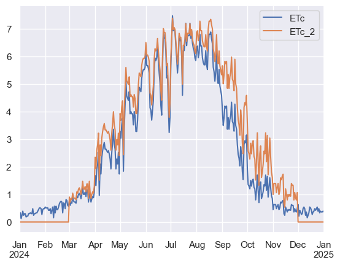
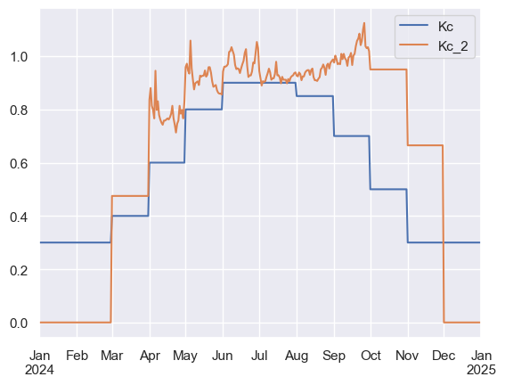
Field level irrigation requirements and evapotranspiration#
We now demonstrated how to get to maximum crop evaporation (or potential evaporation) specifically for Almonds. Finally, to measure the actual evapotranspiration you need to correct for the crop stress to estimate what is truly transpired on a day or during a growing season. However, for this exercise it is already interesting to calculate the ETc-Precipitation and compare it to the irrigation quota to get an estimate of the irrigation requirements and whether they met crop water demand to sustain maximum almond cultivation. And, of course, to get a feel if the current application rates and hydrological context are suitable to intensive almond production.
# water deficit:
df_merged['Irrigation requirement'] = df_merged['ETc'] - df_merged['Precip']
df_merged['Irrigation requirement'][df_merged['Irrigation requirement']<0] = 0
print(df_merged.head())
ETref Precip NDVI Kc ETc Irrigation requirement
2018-01-01 0.6 0.00000 0.203622 0.3 0.18 0.18
2018-01-02 0.6 0.00000 0.206655 0.3 0.18 0.18
2018-01-03 0.7 0.00000 0.209688 0.3 0.21 0.21
2018-01-04 0.6 14.90844 0.212722 0.3 0.18 0.00
2018-01-05 0.6 0.00000 0.215755 0.3 0.18 0.18
C:\Users\ici-1\AppData\Local\Temp\ipykernel_13980\2941941847.py:4: FutureWarning: ChainedAssignmentError: behaviour will change in pandas 3.0!
You are setting values through chained assignment. Currently this works in certain cases, but when using Copy-on-Write (which will become the default behaviour in pandas 3.0) this will never work to update the original DataFrame or Series, because the intermediate object on which we are setting values will behave as a copy.
A typical example is when you are setting values in a column of a DataFrame, like:
df["col"][row_indexer] = value
Use `df.loc[row_indexer, "col"] = values` instead, to perform the assignment in a single step and ensure this keeps updating the original `df`.
See the caveats in the documentation: https://pandas.pydata.org/pandas-docs/stable/user_guide/indexing.html#returning-a-view-versus-a-copy
df_merged['Irrigation requirement'][df_merged['Irrigation requirement']<0] = 0
df_merged['2022-01-01':'2022-12-31'].sum()
ETref 1402.200000
Precip 789.874229
NDVI 135.539456
Kc 208.950000
ETc 982.665000
Irrigation requirement 930.739178
dtype: float64
df_merged['year'] = df_merged.index.year
df_merged['month'] = df_merged.index.month
# Group by year and sum all other columns
yearly_sum = df_merged.groupby('year').sum(numeric_only=True)
# Drop 'year' column if it was included (can happen with some settings)
if 'year' in yearly_sum.columns:
yearly_sum = yearly_sum.drop(columns=['year'])
print(yearly_sum)
# Plot
ax = yearly_sum[['ETref', 'Precip', 'ETc']].plot(kind='bar', figsize=(12, 6), color=['red', 'skyblue', 'green'])
plt.title('Yearly Sum of All Variables')
plt.xlabel('Year')
plt.ylabel('mm/year')
plt.xticks(rotation=0)
plt.legend(title='Variable')
plt.grid(axis='y', linestyle='--', alpha=0.7)
plt.tight_layout()
plt.show()
ETref Precip NDVI Kc ETc \
year
2018 1204.8 822.138323 94.403365 208.95 857.395
2019 1357.3 589.891532 105.781049 208.95 960.390
2020 1332.1 816.661684 175.501365 209.25 941.400
2021 1355.4 631.388915 190.019055 208.95 949.110
2022 1402.2 789.874229 135.539456 208.95 982.665
2023 1450.1 623.845733 124.284762 208.95 1026.155
2024 1353.5 642.282514 127.042824 209.25 955.595
2025 1.2 0.000000 0.264528 0.30 0.360
Irrigation requirement month
year
2018 799.395307 2382
2019 900.382312 2382
2020 865.263936 2384
2021 874.669930 2382
2022 930.739178 2382
2023 973.655000 2382
2024 899.071078 2384
2025 0.360000 1
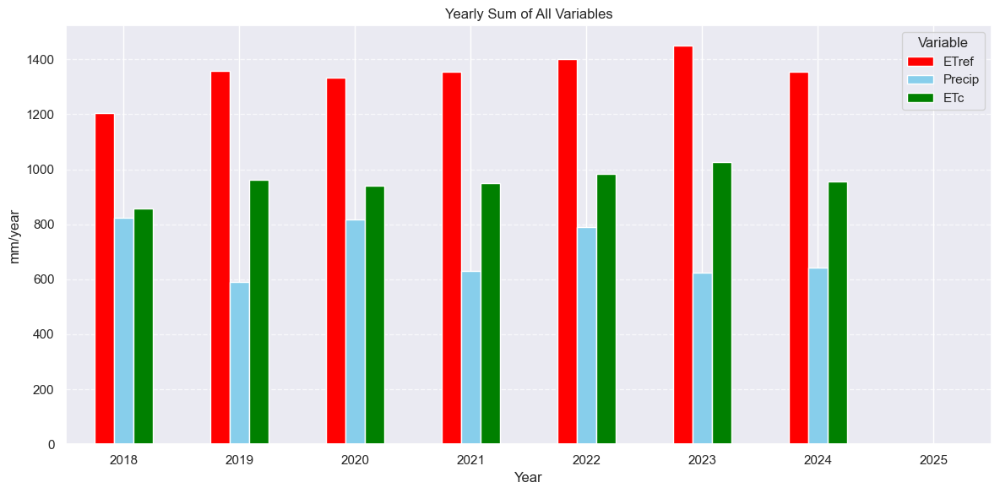
From the above graph we can see rainfall is not sufficient to meet maximum Almond Evapotranspiration
# Filter for months March (3) to September (9)
df_filtered = df_merged[(df_merged['month'] >= 3) & (df_merged['month'] <= 10)]
# Group by year and sum values
yearly_sums = df_filtered.groupby('year').sum().reset_index()
print(yearly_sums)
# some example data
threshold = 570 #mm/year irrigation requirement
# split it up
above_threshold = np.maximum(yearly_sums['Irrigation requirement'].values - threshold, 0)
below_threshold = np.minimum(yearly_sums['Irrigation requirement'].values, threshold)
print(above_threshold)
print(below_threshold)
# and plot it
fig, ax = plt.subplots()
ax.bar(yearly_sums['year'].values, below_threshold, 0.35, color="skyblue")
ax.bar(yearly_sums['year'].values, above_threshold, 0.35, color="r",
bottom=below_threshold)
# horizontal line indicating the threshold
ax.plot([yearly_sums['year'].min(), yearly_sums['year'].max()], [threshold, threshold], color="gray", linestyle='--')
plt.ylabel('Estimated irrigation requirement (mm/year)')
plt.tight_layout()
plt.show()
year ETref Precip NDVI Kc ETc \
0 2018 1067.0 545.594551 60.517942 172.95 816.055
1 2019 1204.4 256.035674 40.938826 172.95 914.520
2 2020 1165.7 514.004143 112.036775 172.95 891.480
3 2021 1183.7 380.992369 134.141658 172.95 897.600
4 2022 1209.9 424.728669 94.161688 172.95 924.975
5 2023 1282.2 401.216579 86.578856 172.95 975.785
6 2024 1175.7 405.426155 91.752046 172.95 902.255
Irrigation requirement month
0 762.318553 1593
1 860.817417 1593
2 822.453936 1593
3 830.059930 1593
4 881.779178 1593
5 930.455000 1593
6 851.311078 1593
[192.31855292 290.81741745 252.45393641 260.05993014 311.77917821
360.455 281.31107831]
[570. 570. 570. 570. 570. 570. 570.]
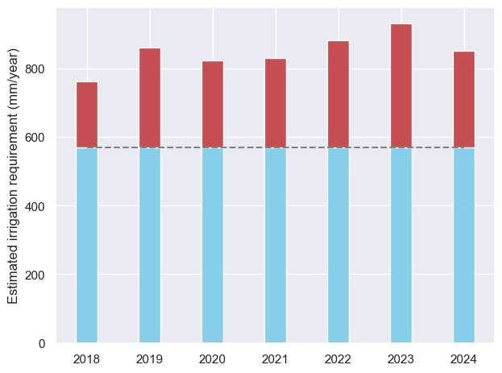
On the irrigation quota#
The irrigation quota is 570 mm/ year (1 hectare) for Alqueva, if we extrapolate this to to Idanha-a-Nova we can estimate that with the available irrigation it is not possible to meet maximum almond evapotranspiration.
However, after a field visit to Idanha-a-Nova in May 2025 we know the irrigation quota is not being controlled due to a outdated irrigation system and absence of flow meters in the system. The bigger orchards actually maintain a trackrecord on how much irrigation water they use and have installed several flow meters at the inlet of their fields.
Almond farmers in Idanha-a-Nova have almost unlimited access to water and, therefore, water stress is not their biggest production issue at the moment
The estimated irrigation requirement to meet maximum almond evapotranspiration is around 800 mm/year during the growing season (March-September)
Sustainable water management or conservation management is of highest priority on field and basin level
On irrigation techniques: All almond orchards we visited in Idanha-a-Nova used drip irrigation
Actual crop evapotranspiration#
To calculate the actual evapotranspiration we need to correct for crop stress to indicate how much water is actually evaporated (also an indication if irrigation is applied). There are multiple ways to include crop stress: by looking at the vegetation stress, or incorporating a rootzone water balance, or to get ETa directly from a energy balance model (e.g. SEBAL). For now we focus on calculating a stress factor on optical signals.
# Filter for April (4) to October (10)
df_apr_oct = df_merged.loc['2021-01-01':'2025-01-01'][(df_merged['Month'] >= 4) & (df_merged['Month'] < 10)]
# Plot grouped by Year
fig, ax = plt.subplots(figsize=(8, 6))
for year, group in df_apr_oct.groupby('Year'):
ax.scatter(group['NDVI'], group['Kc_2'], label=str(year), alpha=0.7)
ax.set_xlabel('NDVI')
ax.set_ylabel('Kc_2')
ax.set_title('Kc (flexible) vs NDVI (April–October)')
ax.legend(title='Year')
plt.grid(True)
plt.tight_layout()
plt.show()
C:\Users\ici-1\AppData\Local\Temp\ipykernel_4292\641371869.py:2: UserWarning: Boolean Series key will be reindexed to match DataFrame index.
df_apr_oct = df_merged.loc['2021-01-01':'2025-01-01'][(df_merged['Month'] >= 4) & (df_merged['Month'] < 10)]
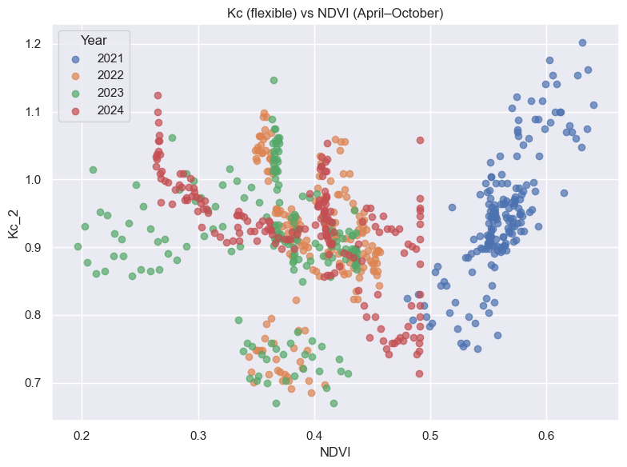
Interesting articles#
Agronomic response, transpiration and water productivity of four almond production systems under different irrigation regimes#
In Spain, irrigated almond has become more popular during recent decades, rising from 4.7 % of cultivated land in 2005 to 26 % in 2023 (180,562 ha)
In the particular case of the Segarra-Garrigues (Lleida, Spain) irrigation district, water rights for almonds in 2023 were established at 1350 m3 ha−1, which corresponded to a water restriction of around 80 % (6500 m3 ha−1 in full water allocation conditions) (ASG, 2023).
Establishing an almond water production function for California using long‑term yield response to variable irrigation#
df_wp = pd.read_csv(os.path.join('Data\\WP\\','wp_almond.csv'), index_col=0, header=0)
sns.set_theme()
# Create the plot
fig, ax = plt.subplots(figsize=(8, 6))
plot = sns.scatterplot(
data=df_wp,
x="Mean Kernel Yield (kg/ha)",
y="Water use (mm)",
hue="Country",
size="WP [kg/m3]",
sizes=(20, 200),
alpha=0.85,
ax=ax
)
# Move the legend outside the plot (right side)
legend = ax.legend(
bbox_to_anchor=(1.05, 1),
loc='upper left',
borderaxespad=0
)
# Bold the legend subtitles
for text in legend.get_texts():
if text.get_text() in ["Country", "WP [kg/m3]"]:
text.set_weight("bold")
plt.tight_layout()
plt.show()
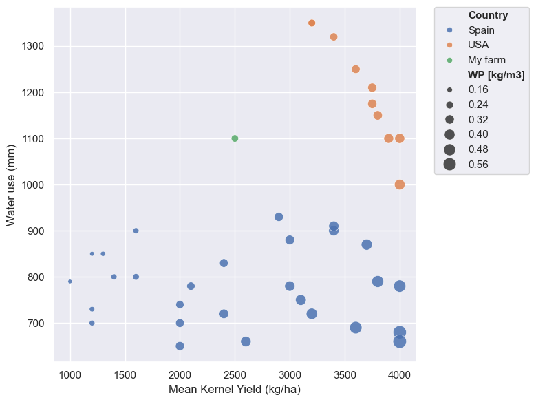
How to continue with Orchard Water Use?#
A first rough field level water use estimate is viable with the data available
Get clean field-level vegetation signals
We can also create spatial ET maps if need be
Future work: correct for Canopy Cover (fraction) and moisture stress –> tree spacing is 6 x 4m on average (see ppt Portugal Nuts)
Explore thermal products (Especially if in cover crops thermal data will be included in analysis)
Idea to add: Water Productivity graph
Get field level irrigation and ET data (weather station) or sm probes (to validate moisture stress)
delve into literature on deficit irrigation and almond production: what are the numbers